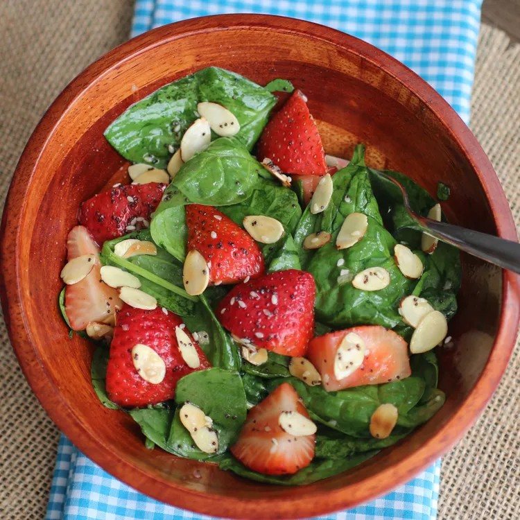

Strawberry Spinach Salad

You can't go wrong with a delicious, filling salad prepared at home
Whether you need a healthy lunch or are looking for a salad
to bring to a party this is one of the recipe for you.
Ingredients
Dressing:
- 1/2 cup white sugar
- 1/2 cup olive oil
- 1/4 cup distilled white vinegar
- 2 tablespoons sesame seeds
- 1 tablespoon poppy seeds
- 1 tablespoon minced onion
- 1/4 teaspoon paprika
- 1/4 teaspoon Worcestershire sauce
Salad:
- 1 quart strawberries-cleaned, hulled and sliced
- 10 ounces fresh spinach-rinsed, dried and torn into bite-size pieces
- 1/4 cup almonds, blanched and silvered
Steps
-
Make dressing: Whisk together sugar, oil, vinegar, sesame seeds,
poppy seeds, onion, paprika, and Worcestershire in a medium
bowl. Cover and chill for 1 hour.
-
Make salad: Combine strawberries, spinach, and almonds ina large bowl.
-
Pour dressing over salad;toss to coat. Refrigerate for 10 to 15
minutes before serving.